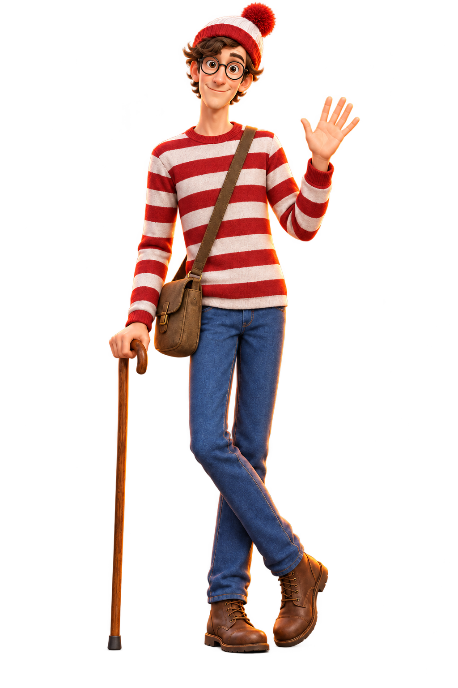

✧
✦
✧
✳
HALLOWEEN SPECIAL
OCT 31
FINDING WALDO
YOU
found me!
A little lost. A little haunted.
oh, hey you!

🎃
🎃
✧
DRAG TO SPIN · TAP TO BOO
✧
×
EXCUSE ME?
That's a bit rude
Okay, my bad ↗
find me before
I find you.
BACK TO THE DARK ↗